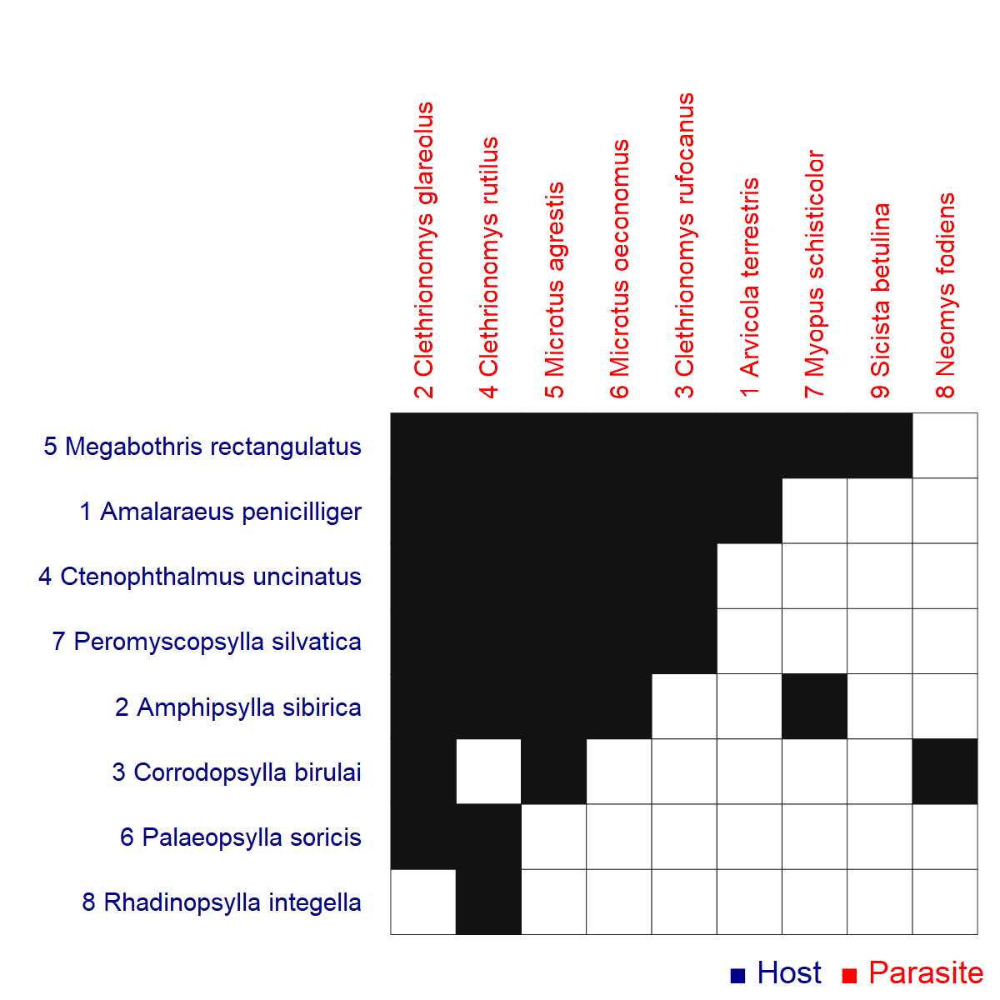

Network: RA_HP_034

Host 1 Amalaraeus penicilliger, 2 Amphipsylla sibirica, 3 Corrodopsylla birulai, 4 Ctenophthalmus uncinatus, 5 Megabothris rectangulatus, 6 Palaeopsylla soricis, 7 Peromyscopsylla silvatica, 8Rhadinopsylla integella
Parasite
1 Arvicola terrestris, 2 Clethrionomys glareolus, 3 Clethrionomys rufocanus, 4 Clethrionomys rutilus, 5 Microtus agrestis, 6 Microtus oeconomus, 7 Myopus schisticolor, 8 Neomys fodiens, 9Sicista betulina
Hadfield JD, Krasnov BR, Poulin R, Shinichi N (2013) A tale of two phylogenies: comparative analyses of ecological interactions. The American Naturalist 183(2): 174-187 Pre-Polar Urals